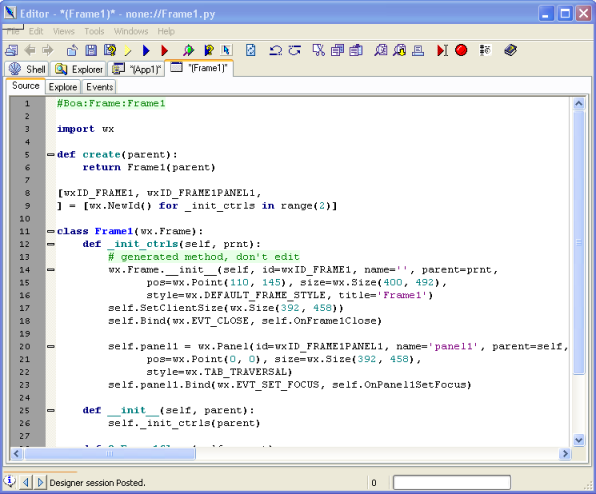
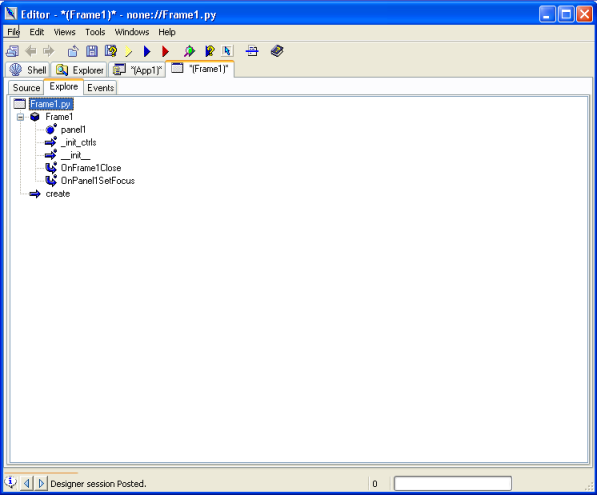
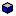
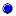
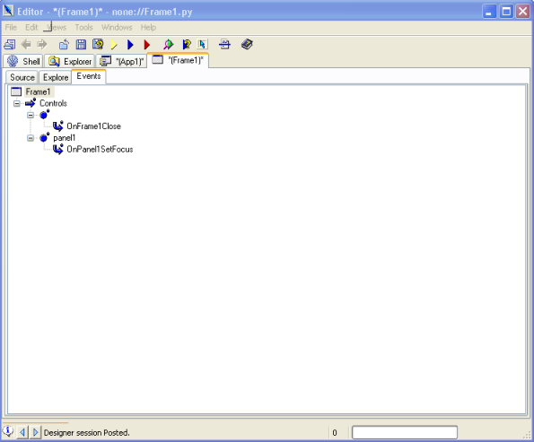
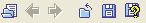
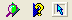
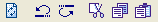
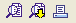
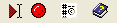

1.3 The Editor Window
The Editor window is one of the three windows which is created when you
run Boa Constructor. If you close the Editor Window, you can re-open it
from the Palette Window using the
Button.
When it is opened the Editor provides two pages, the Shell page and
the Explorer page. You can now open a source file into the Editor.
There
are several methods for opening a source file in Boa Constructors
editor.
- Use the Open Option from the Editor Toolbar or Editor File Menu.
- Use operating system Drag and Drop functionality to drop a file
on the
editor.
- Use the Explorer Window
- Use an application file
- Start the Boa Constructor application with the source file as a
command
line parameter.
- Use one of the options from the 'New' page in the Palette.

When a source file is opened, the editor creates a new page for the
module.
Within that page, the editor creates another notebook to provide
alternative
views of the file, this depends on the type of file. In this case
we show an "App1" and "Frame1", for the Frame1 file three views are
shown, 'Source', 'Explore' and 'Events', should you look at the "App1"
file you would see 'Application', 'Source' and 'Explore' views.
Note: The "*" on the "App1" and
"Frame1" tab indicate that changes have been made which are not saved.
The Source View (seen above) shows the source code and allows you to
change the source
code, unless it has a "blueish" background which indicates that the
Frame Designer is open/active for this file.

The Explore View provides a tree view of the module and the icons shown
indicate the following:
 Classes
 Methods
Methods
 Functions
Functions
 Events
Events
 Global
The 'Explore' Pane shows a Class based view of your source. The methods
and attributes of each class in the source are displayed. You can
double-click
the mouse left button on an attribute or method, and the 'Source' view
will display the definition/source code for that item.

The 'Events' Pane shows a Control based view of the Events you
defined using Boa's Inspector. Manually added events outside the
Boa generated code will not show here.
Additional views can be opened through the Editor/Views menu, this
includes such views as "Application ToDo", "Application Documentation",
"UML" etc, some views will only be available for certain file types.
The 'Views' menu in the editor provides other views on the source.
These
are Hierarchy, Documentation, ToDo, Application ToDo, Imports, UML, CVS
conflicts, Readme.txt, Changes.txt, Todo.txt, Bugs.txt.
- The Hierarchy View shows the classes in your source as a
hierarchy.
The inheritance relationships between classes are clearly visible in
this
view.
- The Documentation View shows documentation, which is
automatically
produced from your source code. If you use standard python
documentation
strings for classes and methods (i.e. a string immediately following
the
declaration), then this information is included in the generated text.
- The ToDo View is used for tracking your to-do lists. You
add
ToDo
items to your code as comment followed by three 'X' characters, e.g. "#
XXX My todo item". These are useful to track items that you want
to
comeback to later.
- The Application ToDo
View
available only for a wx.App type file will show all the files in the
project with the number of todo's per file.
- The UML View shows the relationships between
classes.
- The Imports View shows the relationships between modules.
- The Diff with: View is
created by selecting the menu option File/NDiff files, it will compare
the already open file with the one you select.
- The other views should be obvious.
The icons available on the Editor
window toolbar for a wxFrame file are:
Note: The icons available on
this toolbar change depending on the active file.

The icons above allow you to open, close, save, save-as files and
Browse forward/backward icons allow you to jump to marked possitions
(CTRL-M).

The icons above let you run the application, run the module or debug
the application.

The icons above let you profile the module, check the source, or start
the frame designer (sometimes also refered to as GUI Editor).

The icons above let you Refresh the screen, Undo, Redo, Cut, Copy and
Paste.

The icons above let you Find/Replace, Find again, and print the source.

The icons above let you run to the cursor (in debugger), toggle a
breakpoint (you can also use F5), insert module information (Author
name etc, this can be customized, see Module Info),
and help.
Some helpfull short-cuts:
- To jump to assignment - press CTRL and hover the mouse pointer over the
attribute, a blue underline will show and if you click
on it the editor will jump to the definition (if Boa can find it).
- CTRL-space will give you code completion, e.g. after entering
"wx.F" press CTRL-space
- CTRL-SHIFT-space will give you call tips, e.g. after entering
"wx.Frame(" press CTRL-SHIFT-space
- ALT-O (only available with the ErrOutShortcut plug-in) will show
the notebook with the Tracebacks, Output, Errors and Tasks tabs or if
it is shown will hide it.